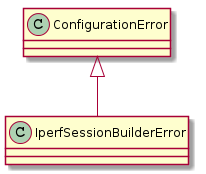
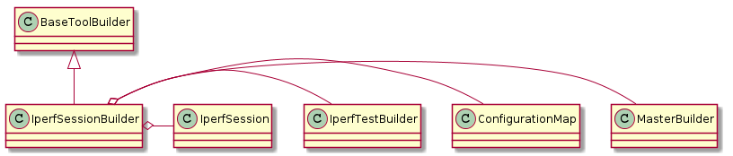

| IperfSessionBuilderError | An error to raise if the config file has an error |

| IperfSessionBuilder(*args, **kwargs) | A class to build an iperf session | ||
| IperfSessionBuilder.filename |
|
||
| IperfSessionBuilder.test |
|
||
| IperfSessionBuilder.directions |
|
||
| IperfSessionBuilder.product |
|
||
| IperfSessionBuilder.parameters |
|
